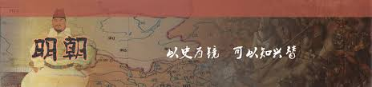

明朝

皇帝世系表
| 皇帝姓名 |
谥号（简） |
庙号 |
年号 |
在位时间 |
关系 |
| 朱元璋 |
孝高皇帝 |
太祖 |
洪武 |
1368年-1398年 |
-- |
| 朱允炆 |
孝让皇帝（南明弘光帝追谥） |
惠宗（南明弘光帝追尊） |
建文 |
1398年-1402年 |
太祖孙，朱标长子 |
| 朱棣 |
孝文皇帝 |
成祖（嘉靖帝改尊），太宗 |
永乐 |
1402年-1424年 |
太祖四子 |
| 朱高炽 |
孝昭皇帝 |
仁宗 |
洪熙 |
1424年-1425年 |
成祖长子 |
| 朱瞻基 |
孝章皇帝 |
宣宗 |
宣德 |
1425年-1435年 |
仁宗长子 |
| 朱祁镇 |
孝睿皇帝 |
英宗 |
正统，天顺 |
1436年-1449年，1457年-1464年 |
宣宗长子 |
| 朱祁钰 |
孝景皇帝 |
代宗（南明弘光帝追尊） |
景泰 |
1449年-1457年 |
宣宗次子 |
| 朱见深 |
孝纯皇帝 |
宪宗 |
成化 |
1464年-1487年 |
英宗长子 |
| 朱佑樘 |
德敬皇帝 |
孝宗 |
弘治 |
1487年-1505年 |
宪宗三子 |
| 朱厚照 |
孝毅皇帝 |
武宗 |
正德 |
1505年-1521年 |
孝宗长子 |
| 朱佑杬 |
兴献帝 |
睿宗（嘉靖帝追尊） |
-- |
-- |
宪宗四子 |
| 朱厚熜 |
孝肃皇帝 |
世宗 |
嘉靖 |
1521年-1567年 |
兴献帝次子 |
| 朱载垕 |
孝庄皇帝 |
穆宗 |
隆庆 |
1567年-1572年 |
世宗三子 |
| 朱翊钧 |
孝显皇帝 |
神宗 |
万历 |
1572年-1620年 |
穆宗三子 |
| 朱常洛 |
孝贞皇帝 |
光宗 |
泰昌 |
1620年 |
神宗长子 |
| 朱由校 |
哲皇帝 |
熹宗 |
天启 |
1620年-1627年 |
光宗长子 |
| 朱由检 |
孝烈皇帝（南明弘光帝追谥） |
思宗（南明弘光帝追尊） |
崇祯 |
1627年-1644年 |
光宗五子 |
| 朱由崧 |
孝件皇帝（南明永历帝追谥） |
安宗（南明永历帝追尊） |
弘光 |
1644年-1645年（南明） |
神宗孙，福王朱常洵子 |
| 朱聿键 |
孝襄皇帝 |
绍宗 |
隆武 |
1645年-1646年（南明） |
太祖九世孙，唐王朱器墭子 |
| 朱聿𨮁 |
孝节皇帝 |
文宗 |
绍武 |
1646年-1647年（南明） |
太祖九世孙，唐王朱器墭子 |
| 朱由榔 |
孝匡皇帝（郑成功追谥） |
昭宗（郑成功追尊） |
永历 |
1646年-1662年（南明） |
神宗孙，桂王朱常瀛子 |